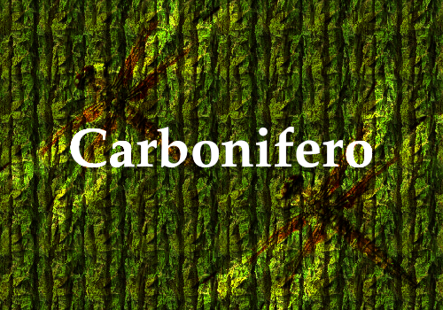
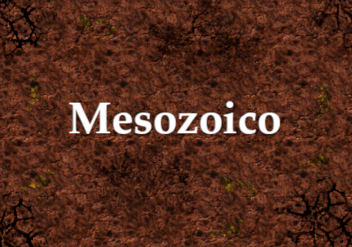
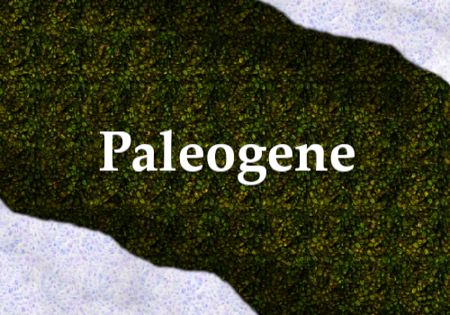
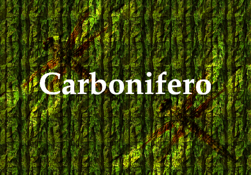
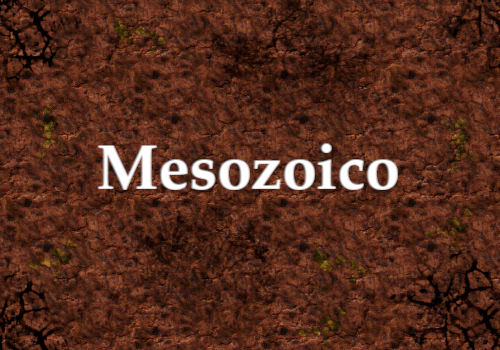
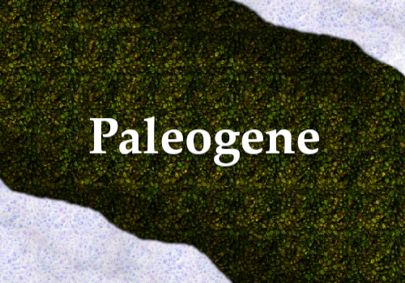
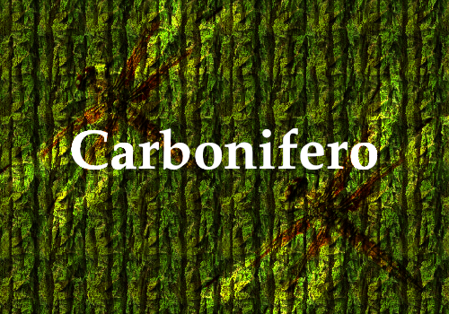
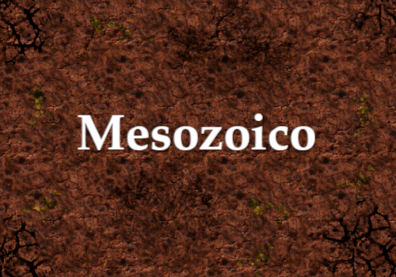
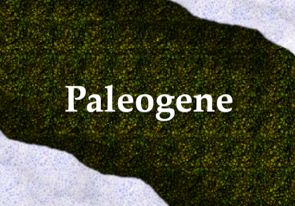

ERAS GEOLÓGICAS
Conheça a Fauna, Flora e Biodiversidade da antiguidade, o apogeu da vida nos oceanos durante o Crambiano, altas temperaturas globais do Permiano até o Jurrásico e a Era do Gelo do Plioceno.
Conheça sobre 





A Paleoarte é uma àrea onde utiliza-se técnicas de ilustração e anatomia para representar animais extintos, neste segmento, a criatividade influência na interpretação de como esses animais eram em vidas.
Conheça sobreApós a morte de um animal, o resto de seu corpo permance exposto a diversas adversidades naturais, onde em uma longa escala de tempo, a permanencia de sedimentos por milhares de anos resulta no processo de fossilização.
Conheça sobreConheça os gigantes da America do Sul, do Jurrásico e Cretásseo, Spinossauro e Carnotauro até a megafauna no Pleistoceno com Tatus do tamanho de um fusca e Preguissas maiores que elefantes atuais.
Conheça sobreConheça a Fauna, Flora e Biodiversidade da antiguidade, o apogeu da vida nos oceanos durante o Crambiano, altas temperaturas globais do Permiano até o Jurrásico e a Era do Gelo do Plioceno.
Conheça sobre



PrehistoricFeather é um site com foco em conteúdos relacionados paleontologia da América do Sul. Explorando sua biodiversidade do passado.


Copyright 2024° Wallace Santos Ribeiro
Todos os direitos reservados